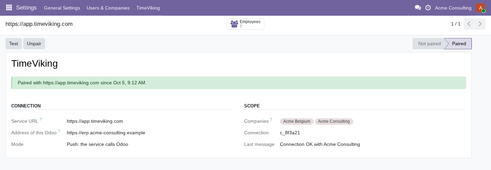
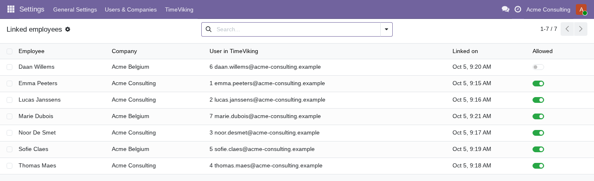

This free module connects your Odoo to TimeViking, an online timesheet service. Your team logs hours in a visual week calendar on the web or on their phone; the hours arrive in Odoo as timesheet lines on your projects and tasks.
Free connector Odoo 18, 19 and 20 Community and Enterprise
Type 2h30 ABC login bug or 9-12:30 #website meeting and the project, task and
duration fill themselves in. Or start a timer, or copy last week in one click.
Drag tasks into the week, stretch a block to change its duration, and see at a glance how each day compares with the planned hours. A grid view is there for those who prefer rows.
Monthly timesheets for customers or payroll in Excel or PDF. Design your own PDF layout with the drag-and-drop template editor: logo, colours, tables, signature.
Work schedules and public holidays set the daily target. With Odoo Time Off installed, employees see their balance and request time off; managers approve it in Odoo as usual.
An installable mobile web app for logging hours on the road or straight after a meeting.
Invite your colleagues, link them to their Odoo employee and they can start. Weeks can be submitted and approved before they count.

See who is linked, and switch off an employee with one click.

Works on your own server and on Odoo.sh. Odoo Online does not allow custom modules; there the service can connect with an API key instead.
Mail support@timeviking.com.
Made by Software Services BV. The module is open source (LGPL-3).